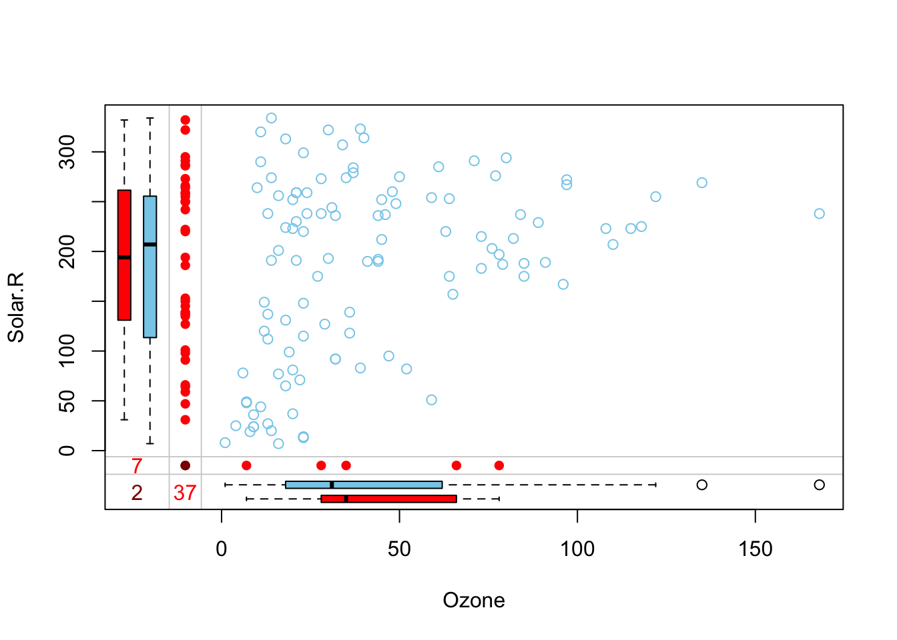
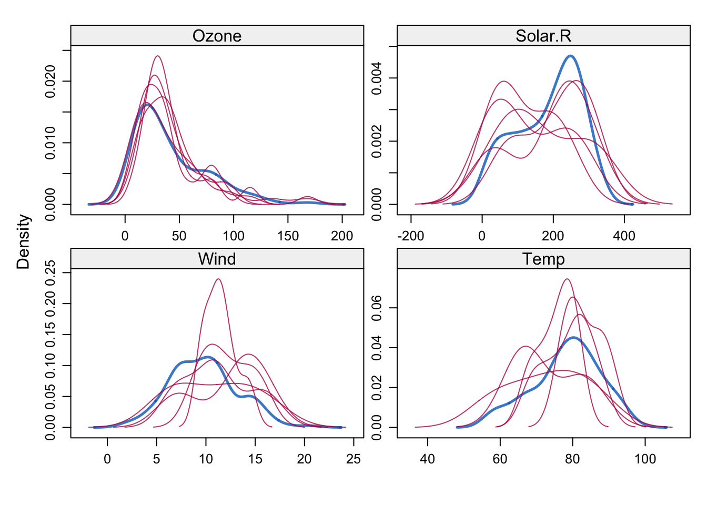
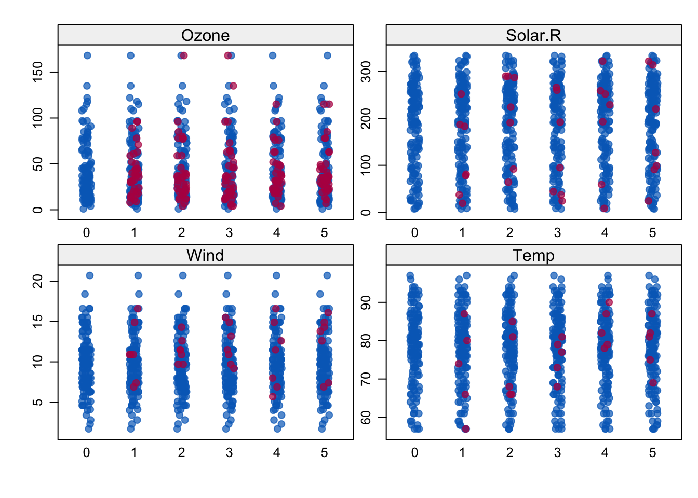

Onlangs gaf Stef van Buuren een verhelderende introductie op het pakket mice dat hij de laatste jaren ontwikkeld heeft en dat een standaardpakket geworden is om missende data om te gaan. Zijn presentatie is hier te vinden slides. Hij verwees tijdens de presentatie naar het artikel dat hij hierover eerder schreef (Van Buuren, and Groothuis-Oudshoorn, 2011)[hier](mice: Multivariate Imputation by Chained Equations in R by Stef van Buuren, het boek dat hij hierover maakte hier en ook verwees hij naar een korte Nederlandse talige introductie hier. Na zijn presentatie las ik via Rbloggers de korte post van Michy Allice hier.Voor deze blog heb ik dat artile van Allice bewerkt. Tot slot las ik ook nog het boek van Heymans en Eekhout over dit onderwerp hier dat ook goed is.
Het mice-pakket
Ontbrekende gegevens zijn niet zo’n triviaal probleem bij de analyse van een dataset. Het is meestal ook niet zo eenvoudig om er rekening mee te houden.
Als de hoeveelheid ontbrekende gegevens zeer klein is in verhouding tot de grootte van de dataset, dan kan het weglaten van de weinige data met ontbrekende kenmerken de beste strategie zijn om de analyse niet te vertekenen,. Met hety weglaten van beschikbare datapunten verdwijnt een bepaalde hoeveelheid informatie. Afhankelijk van de situatie waarmee u te maken hebt, kunt u op zoek gaan naar andere oplossingen voordat u potentieel nuttige datapunten uit uw dataset verwijdert.
Hoewel sommige snelle oplossingen zoals het vervangen door het gemiddelde in sommige gevallen goed kunnen zijn, heb je met zulke eenvoudige benaderingen gewoonlijk bias in de data. Het toepassen van gemiddelde-substitutie laat het gemiddelde onveranderd (wat wenselijk is), maar vermindert de variantie, wat onwenselijk kan zijn.
Het micepakket in R helpt bij het imputeren van ontbrekende waarden met plausibele gegevenswaarden. Deze plausibele waarden worden getrokken uit een distributie die speciaal ontworpen is voor elk ontbrekend datapunt.
Hieronder gaan we ontbrekende waarden imputeren met behulp van de dataset airquality (standaard beschikbaar in R). Voor dit blog verwijder ik een aantal datapunten uit de dataset.
library(mice)
Attaching package: 'mice'
The following object is masked from 'package:stats':
filter
The following objects are masked from 'package:base':
cbind, rbind
data <- airqualitydata[4:10,3] <-rep(NA,7)data[1:5,4] <-NAsummary(data)
Ozone Solar.R Wind Temp
Min. : 1.00 Min. : 7.0 Min. : 1.700 Min. :57.00
1st Qu.: 18.00 1st Qu.:115.8 1st Qu.: 7.400 1st Qu.:73.00
Median : 31.50 Median :205.0 Median : 9.700 Median :79.00
Mean : 42.13 Mean :185.9 Mean : 9.806 Mean :78.28
3rd Qu.: 63.25 3rd Qu.:258.8 3rd Qu.:11.500 3rd Qu.:85.00
Max. :168.00 Max. :334.0 Max. :20.700 Max. :97.00
NA's :37 NA's :7 NA's :7 NA's :5
Month Day
Min. :5.000 Min. : 1.0
1st Qu.:6.000 1st Qu.: 8.0
Median :7.000 Median :16.0
Mean :6.993 Mean :15.8
3rd Qu.:8.000 3rd Qu.:23.0
Max. :9.000 Max. :31.0
Wat categorische variabelen betreft, is het vervangen van categorische variabelen gewoonlijk niet aan te bevelen. Het is wel gebruikelijk om ontbrekende categorische variabelen te vervangen door de modus van de waargenomen variabelen, maar het is de vraag of dat een goede keuze is. Ook al ontbreken er in dit geval geen datapunten van de categorische variabelen (Month, Day), we verwijderen ze uit onze dataset (we kunnen ze later weer toevoegen als dat nodig is) en bekijken de gegevens met summary().
data <- data[-c(5,6)]summary(data)
Ozone Solar.R Wind Temp
Min. : 1.00 Min. : 7.0 Min. : 1.700 Min. :57.00
1st Qu.: 18.00 1st Qu.:115.8 1st Qu.: 7.400 1st Qu.:73.00
Median : 31.50 Median :205.0 Median : 9.700 Median :79.00
Mean : 42.13 Mean :185.9 Mean : 9.806 Mean :78.28
3rd Qu.: 63.25 3rd Qu.:258.8 3rd Qu.:11.500 3rd Qu.:85.00
Max. :168.00 Max. :334.0 Max. :20.700 Max. :97.00
NA's :37 NA's :7 NA's :7 NA's :5
Ozon is blijkbaar de variabele met de meeste ontbrekende datapunten. Hieronder gaan we dieper in op de ontbrekende datapatronen.
Snelle classificatie van ontbrekende gegevens
Er zijn twee soorten ontbrekende gegevens:
MCAR: volledig willekeurig ontbrekend. Dit is het wenselijke scenario in geval van ontbrekende data.
MNAR: missing not at random. Niet-willekeurig ontbrekende gegevens zijn een ernstiger probleem en in dit geval kan het verstandig zijn het proces van gegevensverzameling verder te controleren en te proberen te begrijpen waarom de informatie ontbreekt. Als bijvoorbeeld de meeste mensen in een enquête een bepaalde vraag niet hebben beantwoord, waarom hebben zij dat dan gedaan? Was de vraag onduidelijk?
Ervan uitgaande dat de gegevens MCAR zijn, kan een teveel aan ontbrekende gegevens ook een probleem zijn. Gewoonlijk is een veilige maximumdrempel 5% van het totaal voor grote datasets. Als de ontbrekende gegevens voor een bepaald kenmerk of een bepaalde steekproef meer dan 5% bedragen, moet u dat kenmerk of die steekproef waarschijnlijk weglaten. Daarom controleren we op kenmerken (kolommen) en steekproeven (rijen) waar meer dan 5% van de data ontbreekt met een eenvoudige functie
We zien dat Ozon bijna 25% van de datapunten mist, dus we kunnen overwegen om het uit de analyse te laten of meer metingen te verzamelen. De andere variabelen blijven onder de drempel van 5%, zodat we ze kunnen behouden. Wat de data betreft, leidt het ontbreken van slechts één kenmerk tot 25% ontbrekende gegevens per dataset.
Gebruik `mice voor het bekijken van ontbrekende data patronen
Het mice pakket biedt een mooie functie md.pattern() om een beter inzicht te krijgen in het patroon van ontbrekende gegevens.
Variables sorted by number of missings:
Variable Count
Ozone 0.24183007
Solar.R 0.04575163
Wind 0.04575163
Temp 0.03267974
Uit de grafiek kunnen we opmaken dat bij bijna 70% van de data geen informatie ontbreekt, bij 22% ontbreekt de ozonwaarde en bij de overige variabelen ontbreekt zo’n 5%. Door deze aanpak ziet de situatie er naar mijn mening een stuk duidelijker uit.
Een andere (hopelijk) behulpzame visuele benadering is een speciale boxplot
marginplot(data[c(1,2)])

Uiteraard zijn we hier beperkt tot het plotten van slechts 2 variabelen tegelijk, maar desalniettemin kunnen we hier een aantal interessante inzichten uit verkrijgen. De rode boxplot links toont de verdeling van Solar.R waarbij Ozone ontbreekt, terwijl de blauwe boxplot de verdeling van de resterende datapunten toont. Hetzelfde geldt voor de boxplots van Ozone onderaan de grafiek. Als onze aanname van MCAR-gegevens juist is, dan verwachten we dat de rode en blauwe boxplots sterk op elkaar lijken.
m=5 verwijst naar het aantal geïmputeerde datasets. Vijf is de standaard waarde.
meth='pmm' verwijst naar de imputatie methode. In dit geval gebruiken we pmm (predictive mean matching) als imputatiemethode. Er kunnen ook andere imputatiemethoden worden gebruikt, type methods(mice) voor een lijst van de beschikbare imputatiemethoden.
Als u de geïmputeerde gegevens wilt controleren, bijvoorbeeld voor de variabele Ozon, moet u de volgende regel code invoeren
De uitvoer toont de geïmputeerde data voor elke observatie (eerste kolom links) binnen elke geïmputeerde dataset (eerste rij bovenaan). Als u de gebruikte imputatiemethode voor elke variabele wilt controleren, kunt u dat met mice heel eenvoudig doen
tempData$meth
Ozone Solar.R Wind Temp
"pmm" "pmm" "pmm" "pmm"
Nu kunnen we de voltooide dataset terugkrijgen met de complete()functie. Het is bijna gewoon Engels:
completedData <-complete(tempData,1)
De ontbrekende waarden zijn vervangen door de geïmputeerde waarden in de eerste van de vijf datasets. Als je een andere wilt gebruiken, verander dan de tweede parameter in de complete() functie.
De verdeling van de originele en geïmputeerde data bekijken
Laten we de verdelingen van de originele en geïmputeerde data vergelijken met behulp van een aantal handige plots. Allereerst kunnen we een scatterplot gebruiken en Ozon uitzetten tegen alle andere variabelen.
Wat wij willen zien is dat de vorm van de magenta punten (geïmputeerd) overeenkomt met de vorm van de blauwe punten (waargenomen). De overeenkomstige vorm zegt ons dat de geïmputeerde waarden inderdaad “plausibele waarden” zijn. Een andere nuttige grafiek is de densitygrafiek:
densityplot(tempData)

De dichtheid van de geïmputeerde gegevens voor elke geïmputeerde dataset wordt getoond in magenta, terwijl de dichtheid van de waargenomen gegevens in blauw wordt getoond. Nogmaals, onder onze eerdere aannames verwachten we dat de verdelingen vergelijkbaar zijn.
Een andere nuttige visuele kijk op de verdelingen kan worden verkregen met de stripplot() functie die de verdelingen van de variabelen als afzonderlijke punten toont
stripplot(tempData, pch =20, cex =1.2)

Pooling
Veronderstel dat de volgende stap in onze analyse erin bestaat een lineair model op de gegevens toe te passen. Dan kun je je afvragen welke geïmputeerde dataset je moet kiezen. Het mice pakket maakt het weer heel gemakkelijk om een model te passen op elk van de geïmputeerde datasets en dan deze resultaten samen te voegen
De variabele modelFit1 bevat de resultaten van de aanpassing die is uitgevoerd over de geïmputeerde datasets, terwijl de pool() functie ze allemaal samenvoegt. Blijkbaar is alleen de Ozon variabele statistisch significant.
Vergeet niet dat we de mice-functie hebben geïnitialiseerd met een specifieke ‘seed’-instelling. Daarom zijn de resultaten enigszins afhankelijk van onze initiële keuze. Om dit effect te verminderen, kunnen we een hoger aantal datasets toerekenen, door de standaard m=5 parameter in de mice() functie als volgt te wijzigen
Alice, M. (2015). Imputing missing data with R; micepackage. R-bloggers, 4-10-2015. https://www.r-bloggers.com/2015/10/imputing-missing-data-with-r-mice-package/
Heymans, M. en Eekhout, I. (2019). Applied Missing Data Analysis With SPSS and (R)Studio. Amsterdam. https://bookdown.org/mwheymans/bookmi/
Van Buuren, S. and Groothuis-Oudshoorn, C.G.M. (2011).mice: Multivariate Imputation by Chained Equations in R. Journal of Statistical Software, 45(3), 1–67.
Van Buuren (2012). Multiple imputatie in vogelvlucht. https://stefvanbuuren.name/publications/2012%20Vogelvlucht%20-%20STAtOR.pdf
Van Buuren, S. (2018). Flexible Imputation of Missing Data. Second Edition. Chapman & Hall/CRC, Boca Raton, FL